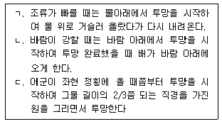
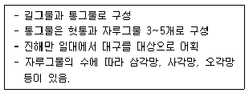

어로산업기사 (2019-03-03 기출문제)
1과목: 어구학
1. 기선권현망 어구의 특징에 관한 설명으로 틀린 것은?
- 날개그물이 자루그물에 비해 매우 크다.
- 자루그물이 뒤쪽으로 갈수록 넓어진다.
- 입망한 어군의 탈출 방지를 위하여 혀그물을 부착한다.
- 어구의 총 침강력을 총 부력보다 더 크게 한다.
(정답률: 83%)

2. 어구재료의 비중이 큰 것부터 차례로 나열한 것은?
- 면 > 비닐론 > 나일론 > 폴리에틸렌
- 폴리에틸렌 > 면 > 비닐론 > 나일론
- 비닐론 > 나일론 > 폴리에틸렌 > 면
- 나일론 > 폴리에틸렌 > 면 > 비닐론
(정답률: 86%)
3. 여자그물감 망지에서 ‘50cm 180경’일 때 폭 방향의 그물코 수는? (단, 날실이 이중으로 되어있다.)
- 200
- 197
- 180
- 179
(정답률: 80%)
4. 1m의 무게가 0.03g인 그물실을 텍스(Tx, Tex) 단위로 나타내면?
- 30 Tx
- 300 Tx
- 27 Tx
- 270 Tx
(정답률: 80%)
5. 외끌이 기선저인망의 후릿줄이 갖추어야 할 조건으로 틀린 것은?
- 표면이 미끄럽지 않을 것
- 지름이 작아 저항이 작을 것
- 침강 속도가 클 것
- 내마성이 클 것
(정답률: 73%)
6. 연안 수역에서 문어, 낙지 등의 습성을 이용하려 어획하는 어구는?
- 예망어구
- 함정 어구
- 자망 어구
- 안강망 어구
(정답률: 98%)
7. 섬유로프 중 꼰 줄(twisted rope)과 땋은줄(braided rope)에 관한 내용으로 옳은 것은?
- 땋은 줄은 꼰 줄보다 비틀리기 쉽다.
- 땋은 줄은 킹크(king)가 잘 생긴다.
- 땋은 줄은 유연하고 취급이 쉽다.
- 땋은 줄은 꼰 줄보다 제작과정이 간단하다.
(정답률: 85%)
8. 그물감을 영구적으로 붙이는 것은?
- 항치기
- 동대기
- 마함
- 델터 죠인터
(정답률: 83%)
9. 그물실의 신장률에 영향을 끼치는 요소가 아닌 것은?
- 구성섬유의 종류
- 꼬임의 정도
- 건습(乾濕)상태
- 꼬임의 방향
(정답률: 90%)
10. 데니어(Td)에 대한 설명으로 틀린 것은?
- 9000m의 길이가 1g일 때 1Td라 한다.
- 길이를 기준으로 하기 때문에 항장법에 속한다.
- 숫자가 커지면 커질수록 실의 굵기는 가늘어 진다.
- 합성섬유나 명주실에 많이 사용된다.
(정답률: 84%)
11. 중층 트롤에서 사용하는 중요 부속구의 일반적인 규격과 수량에 관한 서명으로 옳지 않은 것은?
- 뜸의 부력은 뜸줄이 아래쪽으로 처지지 않을 정도로만 준다.
- 발줄의 침강력은 발줄이 부상하지 않을 정도로만 준다.
- 앞추는 그물의 하방 전개용이므로 침강력을 가능한 한 작게 한다.
- 전개판은 만곡형을 사용하며 종횡비는 2.0으로 한다.
(정답률: 81%)
12. 오른쪽으로 매듭을 만든 그물감은?
- 참매듭 그물감
- 막매듭 그물감
- 모지망
- 랏쉘 그물감
(정답률: 83%)
13. 승강을 일각망(一角網), 이각망(二角網), 삼각망(三角網), …, 팔각망(八角網) 등으로 세분하는 기준은?
- 통그물의 형상
- 통그물의 모서리 수
- 자루구물의 각도
- 자루그물의 수
(정답률: 84%)
14. 다음 어구 중 큰 닻을 사용하는 것은?
- 권현망
- 안강망
- 조기유자망
- 분기초망
(정답률: 95%)
15. 코크기 3cm의 그물감을 뜸줄 63.4cm에 32코를 걸었을 때, 발줄에도 같은 주름을 주려면 24코를 몇cm에 걸어야 하는가?
- 42.4 cm
- 46.8 cm
- 53.6 cm
- 62.4 cm
(정답률: 81%)
16. 사다리꼴 모양의 까래그물로 구성되며, 그물의 전체적 형상이 쓰레받기에 가까운 것은?
- 멸치 들망
- 자리돔 들망
- 꽁치 봉수망
- 말쥐치 들망
(정답률: 82%)
17. 연심로프의 사용 목적은?
- 마모의 방지
- 킹크(kink)의 방지
- 비중의 조절
- 항장력의 증가
(정답률: 74%)
18. 건착망 어구의 그물코 크기에 관한 설명으로 옳지 않은 것은?
- 건착망의 그물코에 고기가 꽂히면 유수저항 증가과 양망기의 마찰력 저하 등의 문제가 발생한다.
- 몸그물의 그물코 크기는 대상 어종이 같은 자망 그물코의 70%로 한다.
- 쌈지그물의 그물코는 그물코 발 1개가 절단되어도 고기가 탈출하지 못할 정도의 크기로 한다.
- 그물 하부는 죔줄을 감을 때 그물코가 닫쳐지므로 몸그물 그물코의 1.5배 크기로 한다.
(정답률: 61%)
19. 인조섬유 중 합성섬유의 폴리아미드(polyamide) 계통 상품명이 아닌 것은?
- nylon
- amilan
- kolon
- terylene
(정답률: 74%)
20. 로프 1코일과 그물 1필 각각의 길이는?
- 100m, 100m
- 100m, 151.5m
- 200m, 151.5m
- 200m, 200m
(정답률: 77%)
2과목: 어업기기학
21. 어탐의 초음파 펄스폭이 1/750초라면 이 어탐의 거리 분해능을 몇 m인가?
- 1m
- 1.5m
- 2m
- 3m
(정답률: 76%)
22. 어류가 전류에 감전되었을 때 전류 밀도의 증가에 따라 취하는 행동으로 옳지 않은 것은?
- 어류는 감전되어 급격한 동작을 일으켜 자극을 피하려고 한다.
- 어류는 전류 방향에 대하여 일정 방향으로 어체를 전향시킨다.
- 어류는 더욱 활발히 활동한다.
- 어류는 마비되고 치사한다.
(정답률: 88%)
23. 건착망 어업에서 뜸줄, 발줄, 그물감을 한데 뭉쳐서 끌어올리는 기능을 하는 어구 조작용 기계가 아닌 것은?
- 사이드 드럼(side drum)
- V형 양망기(V type net hauler)
- 죔줄 윈치(perse winch)
- 블록형 양망기(power block)
(정답률: 79%)
24. 초음파의 응용 분야로서 관계가 가장 먼 것은?
- 선박 위치 결정
- 어군탐색
- 수심 및 저질 탐색
- 인공 강우 미 안개 제거
(정답률: 71%)
25. 다음 어업기계류 중 양승기가 아닌 것은?
- side roller
- side thruster
- ball winder
- V roller
(정답률: 89%)
26. 다음 중 물고기펌프(fish pump)의 날개바퀴의 수로서 가장 좋은 것은?
- 2개
- 4개
- 6개
- 8개
(정답률: 79%)
27. 수중에서 어군의 정보는 주로 음파의 어느것을 이용하는가?
- 전파(microwave)
- 반향음(echo)
- 관성(inertia)
- 탄성(elasticity)
(정답률: 86%)
28. 집어 전기 장치(전기 어법)의 활용성에 대한 설명으로 틀린 것은?
- 정치망에도 주전성을 이용할 수 있다.
- 건착망과 결합하여 어군의 도피를 방지할 수 있다.
- 포경 어업의 작살 대신에 이용할 수 있다.
- 오징어 어업의 유집에 주로 이용할 수 있다.
(정답률: 76%)
29. 어군탐지기의 구성 요소 중 하나로 결합하여 겸용할 수 있는 것은?
- 발진기와 변환기
- 발진기와 증혹기
- 송파기와 수파기
- 증폭기과 기록기
(정답률: 90%)
30. 양망기의 양망능력을 증대시키기 위한 방법으로 적절하지 않은 것은?
- 드럼의 단면을 V홈으로 한다.
- 양망기의 마찰계수를 작게 한다.
- V홈 내면에 돌기를 낸다.
- 그물과 드럼의 접촉각을 크게 한다.
(정답률: 86%)
31. 양승기에서 줄과 풀리와의 마찰계수가 가장 큰 경우는?
- 줄과 철의 습윤 시 마찰
- 줄과 고무의 습윤 시 마찰
- 줄과 피혁의 습윤 시 마찰
- 피혁과 금속의 습윤 시 마찰
(정답률: 89%)
32. 영상식 어군탐지기의 표시 방법은?
- 물표에서 반사되는 초음파 반사신호를 브라운관 (혹은 LCD)을 이용하여 칼라영상으로 나타낸다.
- 해저의 어군으로부터 브라운관에 수신된 반사신호를 기록지상에 나타낸다.
- 선저 바로 밑에 있는 어군으로부터 수파기에 수신된 반사신호를 습식전해기록지에 나타낸다.
- 일정한 속도로 회전하는 고무벨트에 부착된 기록펜이 반사신호를 기록지에 나타낸다.
(정답률: 92%)
33. 다음 중 네트존데에 관한 설명으로 가장 적합한 것은?
- 어구의 수중에서 전개 상태를 정확하게 파악하기 위한 장치이다.
- 기본적으로 탐지부, 전송부, 수신부 및 기록부 등으로 구성된다.
- 트롤 어구에서 수중에서 예인되고 있는 전개판의 간격을 측정하는 장치로 사용된다.
- 선망에서는 그물의 투망에서부터 그물자락의 침강상태를 정확하게 파악하기 위한 목적으로 사용된다.
(정답률: 82%)
34. 송수파기 진동자 재료로서 티탄산바륨 자기를 사용하는 방식은?
- 자의식
- 전의식
- 압전식
- 전자식
(정답률: 71%)
35. 어군탐지기에서 사용하는 초음파의 특징이 아닌 것은?
- 지향성이 크다.
- 굴절성이 있다.
- 인간의 귀로들을 수 없다.
- 기계적인 진동으로 발생시킨다.
(정답률: 77%)
36. 초음파를 이용하여 어구의 수중에서의 전개 상태를 정확하게 파악하기 위한 어업계측기는?
- Net depth meter
- Net recorder
- Echo sounder
- Tension meter
(정답률: 87%)
37. 오징어 자동조획기의 드럼(자새)은 회전 시에 오징어를 낚시에서 퉁겨 빼내는 역할을 한다. 그렇게 하기 위한 드럼의 모양은?
- 원형
- 원통형
- 타원형
- 원추형
(정답률: 80%)
38. 수평식 어군탐지기의 종류가 아닌 것은?
- PPI Sonar
- BDI Sonar
- 주파수 변이 어탐
- 전파 주사 어탐
(정답률: 71%)
39. 전파를 이용한 어업 계측용 기구는?
- Fish finder
- Net height meter
- Net sonde
- Radio buoy
(정답률: 91%)
40. 다음 펌프 정류 중 물고기 펌프(fish pump)의 기본 원리가 되는 것은?
- 왕복동 펌프(Reciprocation Pump)
- 회전 펌프(Rotary Pump)
- 원심 펌프(Centrifugal Pump)
- 축류 펌프(propeller Pump)
(정답률: 88%)
3과목: 어장학
41. 수온약층에 관한 설명이 옳지 않은 것은?
- 수온의 연직온도 경도가 큰 층을 수온약층이라 한다.
- 영구약층은 주로 온대 및 열대 지방의 해역에서 나타난다.
- 계절약층이 나타나는 깊이는 한대 해양에서 가장 깊이 나타난다.
- 계절약층은 태양복사열이 표층에 집중되기 때문에 나타난다.
(정답률: 85%)
42. 어류가 먹이가 풍부한 곳을 찾아 이동하는 회유는?
- 월동회유
- 산란회유
- 성육회유
- 색이회유
(정답률: 91%)
43. 어류의 화학적 수용 기관과 관련 있는 내용과 대상어의 연결이 옳은 것은?
- 모천회귀 – 뱀장어
- 모천회귀 – 은어
- 생활 영역 구분 – 은어
- 염분 농도 - 은어
(정답률: 74%)
44. 다음 중 수심을 재는데 가장 많이 사용되는 것은?
- 추
- 윈치
- 음향측심기
- 전도채수기
(정답률: 94%)
45. 바다가 평온하고 일사가 강하여 표면만이 극히 고온인 경우에 표면해수를 채수하는 가장 좋은 방법은?
- 물을 조용히 그대로 채수한다.
- 기관실의 중간수에서 채수한다.
- 물통을 바다 속으로 넣어 상하로 휘저어서 채수한다.
- 물을 조용히 퍼 올려 2~3번 물통을 씻은 후 채수한다.
(정답률: 83%)
46. 어류의 회유 중 유기회유의 대표적인 어종은?
- 뱀장어
- 쥐치
- 꽁치
- 고등어
(정답률: 88%)
47. 현재 어업에 가장 많이 사용되는 위성으로 해류, 조경, 조목, 와류 등의 위치와 크기, 그 변화 상태를 쉽게 추적할 수 있는 위성은?
- NOAA
- GMS
- LANDSAT
- SEASAT
(정답률: 83%)
48. 남해안 어장환경 특성에 대한 설명으로 옳은 것은?
- 한류와 난류가 교차하여 조경이 형성된다.
- 해수의 오염이 심하다.
- 영양염류의 수직순환이 활발하여 플랑크톤이 풍부하다.
- 어업자원의 종류가 다양하다.
(정답률: 75%)
49. 명태에 대한 설명으로 틀린 것은?
- 우리나라 동해안, 베링해 및 오호츠크해에 분포한다.
- 산란기는 겨울철에 해당하는 12~3월이다.
- 냉수성어류로서 서식수온은 2~10℃이다.
- 최근 국내에서 소비되는 명태는 대부분 동해산이다.
(정답률: 86%)
50. 용승어장이 아닌 곳은?
- 캘리포니아 해류역의 다랑어 어장
- 알제리 연안의 멸치 어장
- 남아메리카 서해안의 페루 해류역의 가다랑어 어장
- 베링해 및 오호츠크해 명태 어장
(정답률: 87%)
51. 우리나라에서 어획되는 살오징어 어황에 대한 설명으로 틀린 것은?
- 한류와 난류의 세력 변화에 따른 조경 및 수온약층의 형성에 지배된다.
- 냉수괴가 연안에 접근하여 남북으로 뻗고 난류의 북상 세력이 약한 해에는 어황이 좋다.
- 냉수괴의 남하세력이 강하여 난류의 주류가 먼 바다로 밀려 나간 해에는 어황이 나쁘다.
- 한류와 난류 세력이 균형되어 조경이 연안 가까이에 남북으로 형성될 때 어황이 좋다.
(정답률: 71%)
52. 대부분의 기상현상이 나타나는 대기권은?
- 열권
- 복사권
- 대류권
- 성층권
(정답률: 87%)
53. 해양의 오염원에 대한 설명 중 틀린 것은?
- 가정하수의 가장 큰 문제점은 중금속이다.
- 발전소, 공장 등에 의해 발생된 폐열은 인근 해역의 생물 다양성에 영향을 준다.
- 선박의 밸러스트수는 해양생물종과 병원균을 이동시킨다.
- 선박충돌 및 좌초로 인한 유류 유출이 전체 유출량에서 차지하는 비율은 작다.
(정답률: 80%)
54. 어장을 형성하는 물리적인 환경요인은?
- 영양염류
- 수온
- 용존산소
- 해저지형
(정답률: 79%)
55. 수온, 염분, 깊이를 연속적으로 측정할 수 있는 기구는?
- GEK
- STD
- BT
- Nansen bottle
(정답률: 91%)
56. 다음 중 영양염류의 농도가 가장 낮은 곳은?
- 여름철의 표층수
- 온대해역
- 한대해역
- 담수가 유입되는 강 하구
(정답률: 76%)
57. 해류를 발생시키는 1차 및 2차적 힘은?
- 에크만 수송, 취송류
- 지형류, 용승류
- 엘리뇨 현상, 조류
- 바람의 변형력, 코리올리 힘
(정답률: 78%)
58. 온난전선의 특징에 관한 내용으로 옳지 않은 것은?
- 전선명의 경사는 1/100~1/20로 완만하다.
- 전선의 범위가 넓고 지속성 강우를 동반한다.
- 소나기 뇌우, 돌풍 등의 사나운 날씨를 보인다.
- 전선통과 후 기온이 상승한다.
(정답률: 86%)
59. 해수의 밀도가 1.02736일 때 σt의 값은?
- 2736
- 273.6
- 27.36
- 2.736
(정답률: 80%)
60. 오징어 주낙어업의 주된 어장은?
- 연평도 근해 어장
- 거문도 근해 어장
- 대화퇴 어장
- 동중국해 어장
(정답률: 85%)
4과목: 어법학
61. 정치망의 기본치수를 정하는 기준이 되는 것은?
- 어장의 수심
- 어선의 크기
- 조류의 세기
- 어군의 내유량
(정답률: 77%)
62. 선망 어업의 투망 시 조선법으로 옳은 설명을 모두 고른 것은?

- ㄱ, ㄴ
- ㄴ, ㄷ
- ㄱ, ㄷ
- ㄱ, ㄴ, ㄷ
(정답률: 69%)
63. 전개판의 저항 FD를 바르게 나타낸 식은?
- FD = CDρSV2
- FD = CDρS2
- FD = 1/2 CDρSV2
- FD = 1/2 CDS2
(정답률: 87%)
64. 기선권현망의 오비기가 하는 역할은?
- 어군의 구집
- 어군의 유집
- 어군의 차단유도
- 어군의 포획
(정답률: 71%)
65. 꽁치유자망에서 그물감이 한데 말려서 줄이 꼬아 놓은 것처럼 되는 현상은?
- 비틀림 현상
- 마찰현상
- 파단현상
- 순대말이현상
(정답률: 95%)
66. 조기의 어획에 주로 사용되는 어법은?
- 주낙
- 안강망
- 저인망
- 권현망
(정답률: 82%)
67. 사리 때를 중심으로 그 전후 약 10일간 주 조업이 이루어지는 어업은?
- 트롤
- 선망
- 통발
- 안강망
(정답률: 77%)
68. 멸치 유자망의 1폭에 직경 240mm(부력 5.5kg)의 유리뜸을 10개 사용하고 수중 중량이 50g인 발돌 120개를 사용한다면 잉여부력은?
- 6kg
- 49kg
- 55kg
- 60kg
(정답률: 66%)
69. 기선권현망 어선단에 포함되지 않는 선박은?
- 본선(망선)
- 집어선
- 어탐선
- 가공선
(정답률: 79%)
70. 그물코의 크기가 아가미 둘레와 일치해야하고, 한 가지 어구로 잡을 수 있는 고기의 크기가 한정되는 어구는?
- 걸그물
- 들그물
- 두릿그물
- 얽애그물
(정답률: 85%)
71. 트롤어업에서 전개판 하나의 전개력 FL은 일반적으로 그물저항 RN의 몇 %인가?
- 10
- 20
- 30
- 40
(정답률: 79%)
72. 끌그물 어구 중 가장 길이가 긴 것은?
- 쌍끌이 저인망
- 중층 트롤
- 외끌이 저인망
- 기선 권현망
(정답률: 73%)
73. 다랑어 주낙을 쌍부표식 투승으로 부설할 때 모릿줄의 규모는 어느 정도 되어야 하는가?
- 8~9절
- 12~14절
- 16~18절
- 20~24절
(정답률: 77%)
74. 정치망 어구 중 어포부의 모양이 자루 모양인 것은?
- 승망
- 대모망
- 낙망
- 소대망
(정답률: 62%)
75. 대형 선망어업의 주 대상 어획물은?
- 방어
- 오징어
- 멸치
- 고등어
(정답률: 83%)
76. 다음에 해당하는 어법은?

- 대망류
- 승망류
- 소대망류
- 대형낙망류
(정답률: 80%)
77. 다랑어 주낙에서 선속과 함께 단축률을 조절하는 방법으로 사용하는 어로장치는?
- 양승기
- 콘베이어벨트
- 투승기
- 로프정리기
(정답률: 70%)
78. 트롤 그물 중 북양의 명태 같이 유영층의 변동이 심한 어족의 어획을 위해 망고를 훨씬 크게 높일 수 있도록 개발된 것으로 천장망의 길이 짧은 특징을 가진 그물은?
- 점보형 그물
- 두 폭짜리 그물
- 네 폭짜리 그물
- 여섯 폭짜리 그물
(정답률: 85%)
79. 남해안 멸치 권현망 어법의 선단 구성과 거리가 먼 것은?
- 그물배 2척
- 어탐선 1척
- 집어선 1척
- 가공·운반선 2척
(정답률: 83%)
80. 범포식 안강망 어구 개량에 있어서 재래식 어구과 가장 큰 차이가 있는 부분은?
- 어구의 형상
- 부력과 침강력의 크기
- 전개장치
- 각종 줄의 규격
(정답률: 91%)